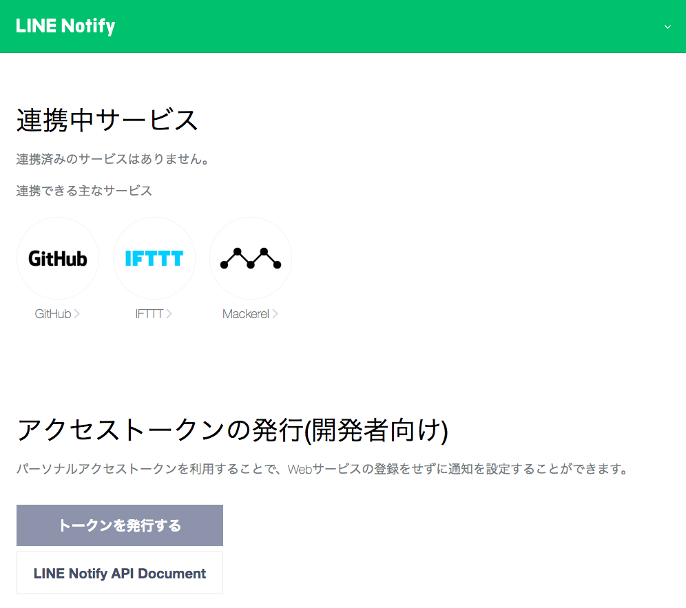
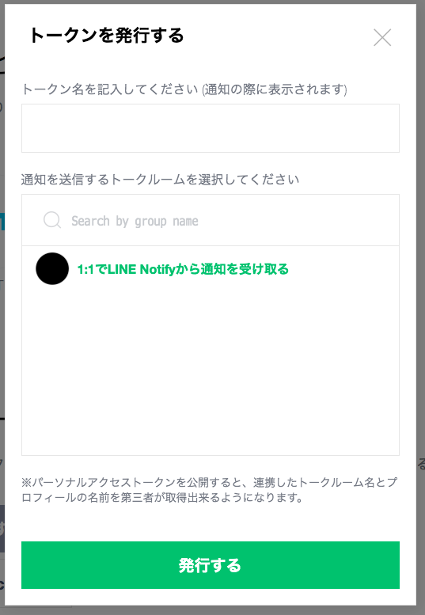
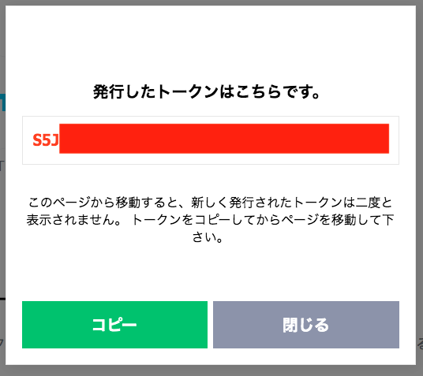
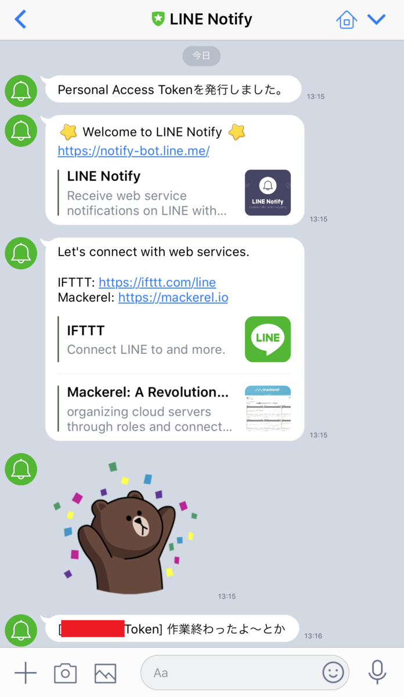

LINE Notify を使ってシェルスクリプトから LINE に通知を送る
LINE Notify というサービスを利用すると、コマンドラインから LINE アプリに対して通知を送れたりするので試してみた。
目次
パーソナルアクセストークンを発行する
まずは LINE Notify API をコールするためのトークンを発行する。次のページに移動し、自分の LINE ID でログインする。
すると「トークンを発行する」というボタンがあるのでコレを押下する。

トークン名を任意で決め、送信先を選ぶ。今回は自分自身に1対1で送信するようにしてみる。トークン名は受信メッセージの冒頭に表示されるので、それを意識して書いておくと良い。

トークンを発行すると次のような画面が表示されるので、トークン文字列をコピーしておく

curl でメッセージを送ってみる
先ほど生成したトークンを加えて、次のようなコマンドを作ってみる。なんとなく「作業が終わった通知」みたいなテイで適当にメッセージを入れておく。
$ curl -X POST -H 'Authorization: Bearer 【トークン】' -F 'message=作業終わったよ〜とか' https://notify-api.line.me/api/notify
実行すると次のようなレスポンスが受け取れるはずだ。
{"status":200,"message":"ok"}
そしてスマホで LINE を開くと、以下のようにメッセージが届いているはずだ。

以上
コレで簡単に LINE への通知が送れるようになった。長時間かかる処理の結果を外出先で取得する、といったスクリプトも書けるようになるだろう。